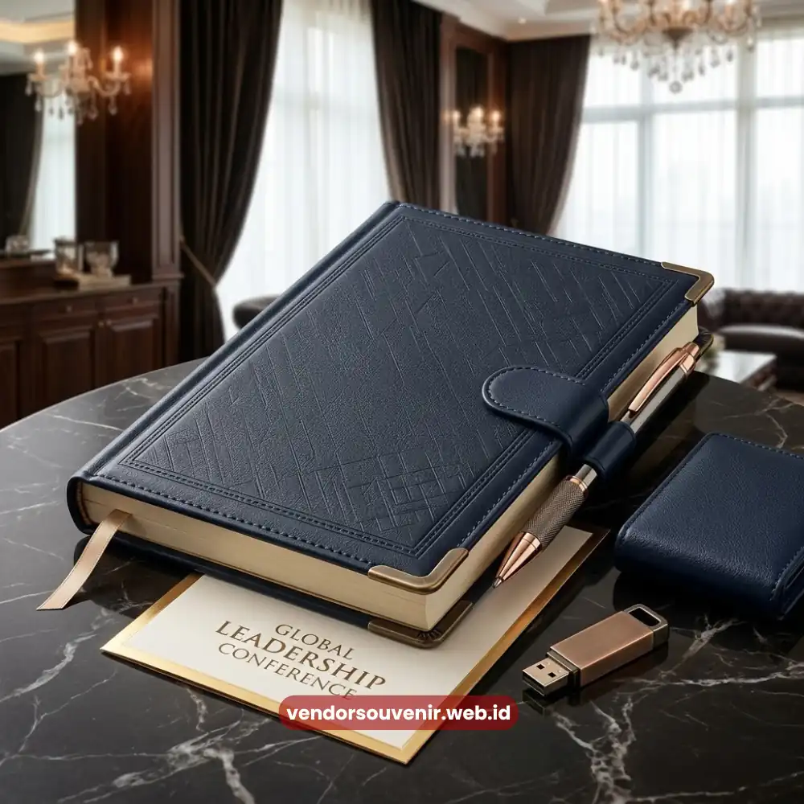
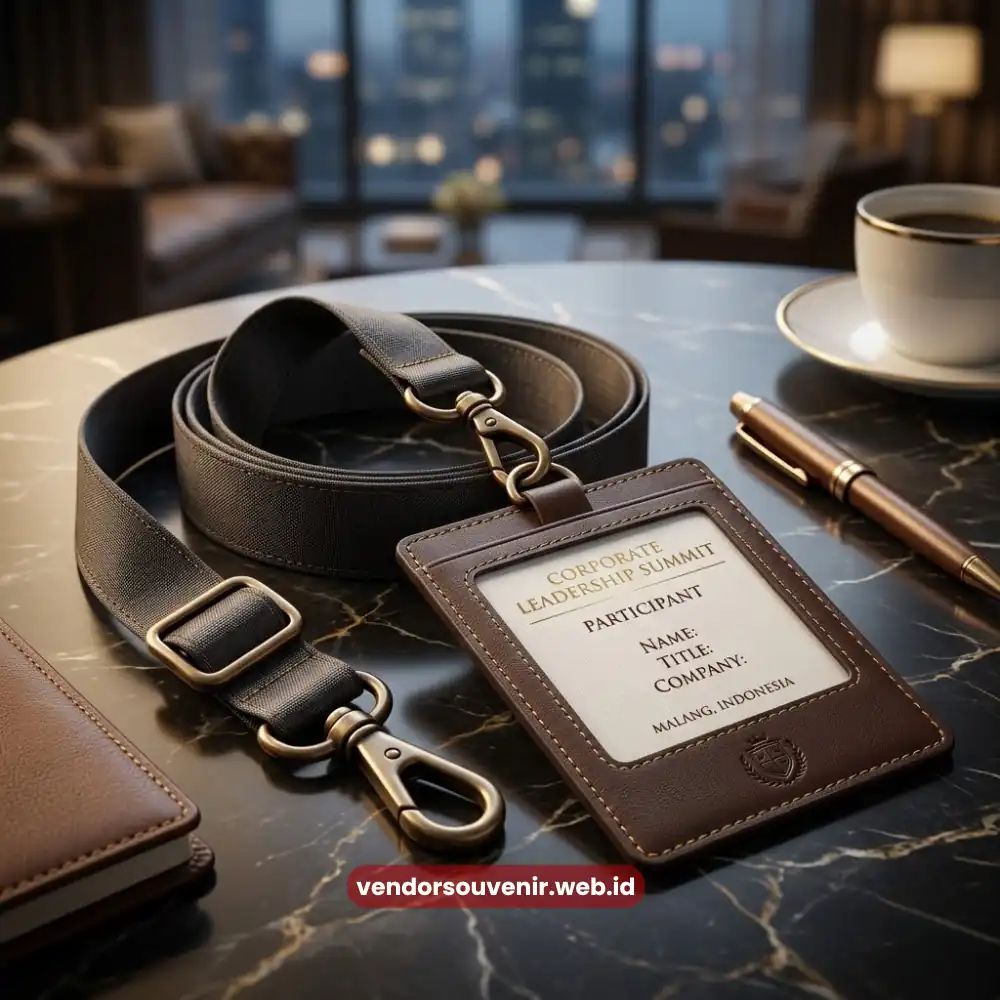

Daftar Isi
Seminar kit custom logo perusahaan adalah rangkaian perlengkapan seminar yang dicetak dengan identitas visual korporat, mulai dari logo, warna, hingga tagline perusahaan.
Fungsinya lebih dari sekadar pelengkap acara, karena setiap item yang dicetak custom berperan sebagai representasi nyata dari nilai dan citra perusahaan di hadapan peserta.
Semakin konsisten eksekusi visualnya, semakin kuat pula identitas brand yang tertanam dalam ingatan peserta seminar.
- Custom logo pada seminar kit memperkuat pengenalan brand secara konsisten.
- Setiap item berfungsi sebagai media branding sekaligus perlengkapan fungsional peserta.
- Konsistensi warna dan tipografi menentukan kualitas kesan visual acara.
- Personalisasi ringan dapat meningkatkan keterikatan emosional peserta terhadap brand.
Apa Itu Seminar Kit Custom Logo Perusahaan?
Secara sederhana, seminar kit custom logo perusahaan merujuk pada satu paket perlengkapan seminar yang seluruh atau sebagian besar itemnya telah disesuaikan dengan identitas visual korporat.
Item yang umum dicetak custom antara lain notebook, pulpen, tas jinjing, lanyard, hingga tumbler, dengan logo dan skema warna yang mengikuti panduan brand perusahaan.
Konsep ini berbeda dari perlengkapan seminar generik yang dijual tanpa personalisasi.
Dengan custom logo, setiap item tidak hanya berfungsi sebagai alat bantu selama sesi berlangsung, tetapi juga menjadi kanvas komunikasi visual yang memperkenalkan perusahaan kepada peserta secara halus namun konsisten sepanjang acara.
Mengapa Custom Logo Penting untuk Seminar Kantor?
Peserta seminar korporat umumnya terdiri dari kalangan profesional yang cukup kritis dalam menilai detail penyelenggaraan acara.
Kehadiran logo perusahaan pada perlengkapan seminar memberikan sinyal bahwa acara tersebut dipersiapkan dengan serius dan terencana, bukan sekadar formalitas rutin tahunan.
Selain memperkuat kesan profesional, custom logo juga berfungsi sebagai alat pengingat jangka panjang.
Notebook atau tumbler dengan logo perusahaan yang terus digunakan peserta setelah seminar usai akan terus memperlihatkan identitas brand dalam aktivitas kerja sehari-hari mereka, menciptakan efek pengenalan brand yang berkelanjutan tanpa biaya promosi tambahan.
Item Apa Saja yang Cocok Dicetak dengan Logo Perusahaan?
Beberapa item perlengkapan seminar memiliki area cetak yang cukup luas dan strategis, sehingga hasil branding terlihat lebih maksimal.
Notebook dengan sampul custom dan tas jinjing berbahan kanvas menjadi dua item yang paling sering dipersonalisasi, karena permukaannya luas dan mudah menampilkan logo secara jelas.

Lanyard dan ID Card Custom Logo
Lanyard dan name tag turut berperan penting, khususnya untuk seminar dengan skala peserta besar, karena item ini dikenakan langsung oleh peserta sepanjang acara sehingga logo perusahaan terus terlihat dari sudut pandang siapa pun yang hadir.
Tumbler dan pulpen custom melengkapi rangkaian ini sebagai item fungsional yang memperpanjang usia pakai branding hingga jauh setelah seminar berakhir.
Bagaimana Menjaga Konsistensi Branding pada Seminar Kit?
Konsistensi branding dimulai dari kejelasan panduan visual perusahaan, mencakup kode warna, jenis huruf, dan proporsi logo yang diterapkan pada setiap item.
Ketidaksesuaian warna atau ukuran logo antar item sekecil apa pun dapat menurunkan kesan profesional yang ingin ditampilkan perusahaan di hadapan peserta.
Selain aspek visual, pemilihan material dan teknik cetak turut memengaruhi hasil akhir konsistensi branding.
Teknik cetak yang tepat untuk masing-masing bahan, seperti sablon pada tekstil atau cetak digital pada notebook, akan memastikan logo tampil tajam dan tahan lama, bukan pudar setelah beberapa kali pemakaian.
Seminar kit custom logo perusahaan bukan sekadar pelengkap acara, melainkan investasi strategis untuk memperkuat identitas dan citra profesional perusahaan di mata peserta.

Solusi Souvenir dari Vendor Terpercaya
Butuh Bantuan Merancang Seminar Kit Custom Logo?
Tim ahli kami siap membantu Anda menyusun paket seminar eksklusif yang menarik.
Pilihan barang akan disesuaikan dengan ketersediaan budget dan kebutuhan Anda.
Seluruh desain akan kami selaraskan dengan identitas visual perusahaan Anda.
Dapatkan penawaran harga terbaik untuk pesanan massal!
FAQ Seputar Seminar Kit Custom Logo
Apakah semua item seminar kit wajib dicetak custom logo?
Tidak wajib seluruhnya, namun disarankan minimal pada item utama seperti notebook dan tas agar branding tetap terasa konsisten dan tidak berlebihan.
Berapa lama waktu yang dibutuhkan untuk proses cetak custom?
Waktu pengerjaan bervariasi tergantung jumlah item dan teknik cetak yang digunakan, sehingga sebaiknya dipesan jauh sebelum tanggal pelaksanaan seminar.
Apakah seminar kit custom logo cocok untuk perusahaan skala menengah?
Sangat cocok, karena personalisasi logo dapat disesuaikan dengan anggaran dan jumlah peserta tanpa mengurangi kualitas kesan branding yang dihasilkan.
Maroon Souvenir
Partner Corporate Gift terpercaya di Indonesia. Berpengalaman melayani ratusan perusahaan sejak 2018.
Lihat Portofolio Kami